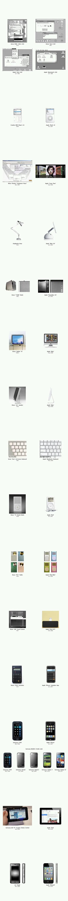
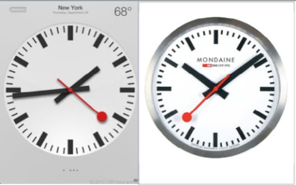
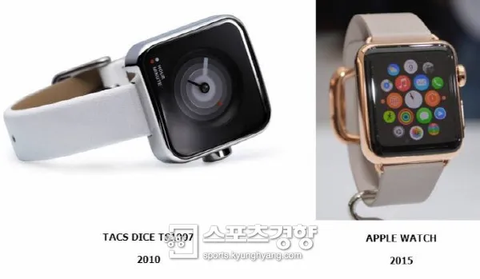
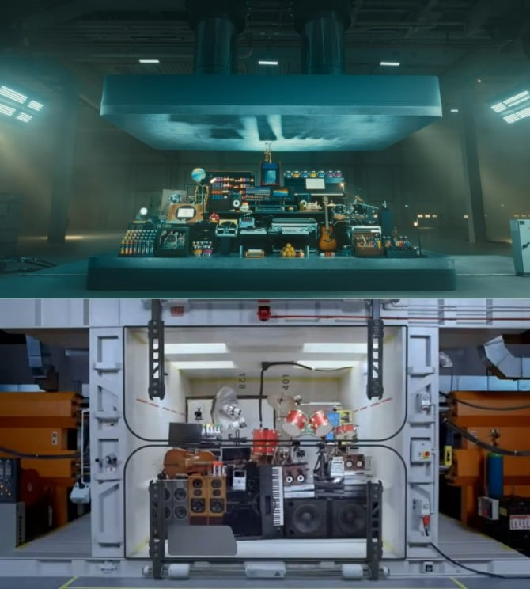
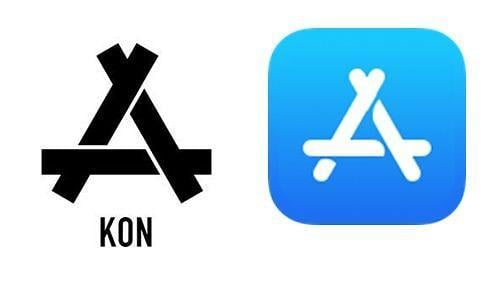
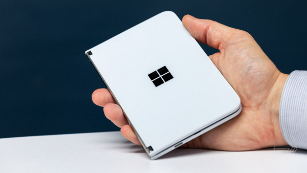
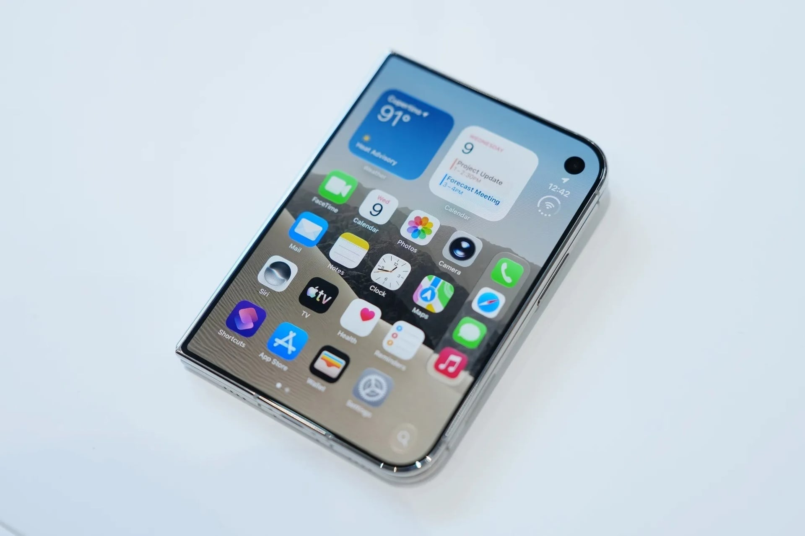
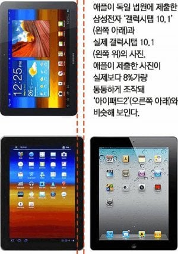

억지스러운것도있고 그럴싸한것도있음

ios6 시계 디자인 표절의혹

애플워치 표절 의혹

애플이 LG전자 광고를 표절했다는 논란이 일고 있다. 위는 지난주 공개된 애플의 아이패드 프로 광고, 아래는 16년 전 공개된 LG전자 휴대전화 'KC910 르누아르(KC910 Renoir)' 광고 영상. 둘 다 기기를 유압 프레스로 짓누른다.
ㅊㅊenews.com/article/ICT/2024/05/2024051210551036073b60030fa2_1
엘지 광고 표절 의혹

앱스토어 아이콘 중국 의류업체 아이콘 표절 의혹


레딧에서도 서피스듀오 이름과 곡선 디자인을 애플이 다 훔쳐가고있다고 울부짖지만 아무도 관심없어 슬픈 서붕이의 아픈손가락 표절의혹

갤탭 10.1 아이패드2 표절주장 사건도있음
맨 마지막은 미친놈들인가 ㅋㅋㅋㅋ